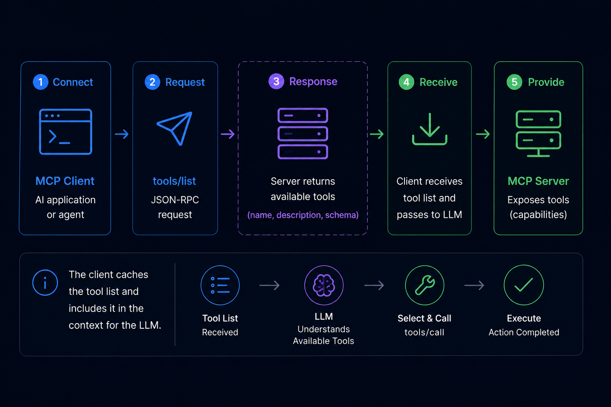

MCP Tools: The Protocol Primitive That Powers AI Agent Actions
- Problem: MCP tools let AI assistants take actions, but tools/list discovery injects full schemas into every prompt — 50 tools consume 10,000-25,000 tokens in overhead alone.
- Solution: Anthropic Tool Search (lazy-loading), OpenAI allowed_tools (whitelist), and CLI subprocess patterns address different dimensions of the token overhead problem.
- Result: Understanding how MCP tools work at the protocol level helps you design more efficient tool sets and choose the right optimization strategy for your production workload.
What Are MCP Tools?
MCP tools are the model-controlled primitive in the Model Context Protocol that lets AI assistants take actions like querying APIs or executing code. The MCP specification defines tools as one of three primitives (alongside resources and prompts), with a name, description, and input schema invokable via tools/call.
Anthropic introduced the Model Context Protocol in November 2024, positioning tools as the mechanism that transforms an AI assistant from a passive responder into an active agent. The MCP specification defines a tool as a function with four components:
- name: A unique identifier the LLM uses to select the tool in a tools/call request
- description: Natural language explanation of what the tool does and when to use it — the primary signal the LLM uses for tool selection
- inputSchema: A JSON Schema describing the parameters the tool accepts
- annotations: (optional) Metadata including whether the tool is idempotent, whether it requires approval, or its danger level
The tools/call request is the core RPC in MCP. When the LLM decides to use a tool, it generates a tools/call request specifying the tool name and arguments. The MCP client routes this to the appropriate server, which executes the tool and returns the result to the client, which passes it back to the LLM for the next reasoning step.
Unlike resources (which let the model read data) or prompts (which provide task templates), tools are model-controlled — the LLM decides which tool to invoke based on its understanding of the user's request and the tool descriptions. This is what makes MCP tools the action primitive of the protocol.
The Linux Foundation took stewardship of the MCP specification in December 2025, with the SDK recording 97 million monthly downloads as of early 2026 (Source: NeosAlpha MCP ecosystem report). This growth reflects how central tools have become to AI agent development — every LLM interaction that involves taking action flows through the MCP tools mechanism.
MCP Tools vs Resources vs Prompts: The Three Primitives
The MCP specification defines three primitives that MCP servers can expose. Understanding the distinction helps you decide what to model as a tool versus a resource or prompt.
| Primitive | Control | Purpose | Example |
|---|---|---|---|
| Tools | Model-controlled | Perform actions, computations, API calls | Search web, send email, run SQL |
| Resources | Server-controlled | Read data managed by the server | File contents, database records, configs |
| Prompts | Server-controlled | Reusable prompt templates | Code review template, report generator |
Tools are the model-controlled primitive: the LLM decides when and how to invoke them. Each tool invocation goes through a tools/call request, and the result feeds back into the model's context for the next reasoning step.
Resources are server-managed data that the LLM can read but not modify. Resources have a URI scheme (like file:// or db://) and are exposed through a resources/list and resources/read interface. The model doesn't control when resources are read — it requests them through a separate resources/read call.
Prompts are reusable prompt templates that servers can expose for specific workflows. A server might expose a "security code review" prompt that guides the model through a security checklist, or a "customer support response" template for handling support tickets. Prompts are server-controlled, not model-controlled.
The key distinction: tools let the model act, resources let the model read, and prompts guide how the model thinks. In practice, many MCP servers primarily expose tools — the MCP specification notes that tools are the most frequently implemented primitive in the ecosystem.
When to use each: Model a capability as a tool when the LLM needs dynamic, context-aware control over when to invoke it — like searching the web or executing code. Use resources when you want the server to control what data is available and when the model can access it — like reading from a database or file system. Use prompts when you want to enforce a specific workflow or reasoning pattern — like a security audit checklist or a customer response template. A single MCP server can expose all three primitives, but most production servers focus primarily on tools because they enable the most flexible, model-driven behavior.
If you're building an MCP server, model your capabilities as tools when the LLM should decide when to use them, resources when you want to control what data the model can access, and prompts when you want to enforce structured workflows.
How tools/list Discovery Works
Before an LLM can call a tool, it needs to know what tools are available. The MCP discovery mechanism handles this through a tools/list request-response cycle that runs every time a client connects to a server or when the tool list changes.

Phase 1: tools/list Discovery
When an MCP client connects to a server, it sends a tools/list JSON-RPC request. The server responds with the complete list of available tools, including each tool's name, description, and inputSchema.
// tools/list JSON-RPC request (client → server)
{"jsonrpc": "2.0", "id": 1, "method": "tools/list", "params": {}}
// tools/list response (server → client)
{"jsonrpc": "2.0", "id": 1, "result": {
"tools": [
{
"name": "web_search",
"description": "Search the web for current information. Use when you need up-to-date facts or prices.",
"inputSchema": {
"type": "object",
"properties": {
"query": {"type": "string", "description": "The search query"}
},
"required": ["query"]
}
}
]
}}Phase 2: LLM Tool Selection
Once the client has the tool list, it injects the tool schemas into the LLM's system prompt. The LLM reads the descriptions and decides which tool to invoke based on the user's request. This decision is entirely model-controlled — the MCP client doesn't filter or rank tools.
Phase 3: tools/call Execution
When the LLM selects a tool, it generates a tools/call request specifying the tool name and arguments. The client routes this to the appropriate server, which executes the tool and returns the result.
// tools/call JSON-RPC request (client → server)
{"jsonrpc": "2.0", "id": 2, "method": "tools/call", "params": {
"name": "web_search",
"arguments": {"query": "MCP protocol token overhead 2026"}
}}
// tools/call response (server → client)
{"jsonrpc": "2.0", "id": 2, "result": {
"content": [
{"type": "text", "text": "According to the Apigene benchmark (April 2026): MCP servers with 50 tools consume 10,000-25,000 tokens per prompt in schema overhead..."}
]
}}The critical insight: every tool in the server's list contributes its schema to the prompt, regardless of whether the LLM will use it. This is where the token overhead problem emerges at scale.
When you manage tools across multiple MCP servers — a common pattern in production AI systems — the overhead doesn't just multiply, it compounds in complexity. Each server maintains its own tool registry, and the client's tools/list calls must aggregate across all connected servers. With 5 servers averaging 20 tools each, your LLM context receives schema data for 100 tools before the actual user request is processed. This cross-server aggregation is the primary driver of token overhead in enterprise AI deployments, and it's the dimension that lazy-loading and whitelisting alone cannot solve.
MCP Tool Discovery in Production: The Token Overhead Problem
At small scale, MCP tool discovery works cleanly. But production MCP servers often expose dozens or hundreds of tools. The tools/list mechanism injects all tool schemas into every prompt — and this overhead compounds rapidly.

At 50 tools, the schema overhead alone can consume 15,000 tokens per prompt. At 93 tools (the count in Anthropic's GitHub MCP server), the overhead reaches 55,000 tokens — nearly half of GPT-4o's context window in a single round trip. Apigene's benchmark (April 2026) measured 200-500 tokens per tool at varying schema complexity, confirming the sublinear pattern where complex schemas consume disproportionately more tokens.
The pattern isn't linear. Tools with complex input schemas — those with nested objects, multiple required parameters, or verbose descriptions — consume disproportionately more tokens. A single tool with a 40-line JSON schema can cost as much as 80 simple tools with 5-line schemas. Anthropic's GitHub MCP server (93 tools, 55,000 tokens) illustrates the worst case: a production server with detailed schemas hits token overhead that dominates the actual prompt content.
Beyond token cost, there's a decision quality problem. Research on LLM tool use consistently shows that models degrade in tool selection accuracy as the tool count increases. With 50+ tools to choose from, models are more likely to select the wrong tool or miss an available tool entirely. This is the "decision degradation" problem — the model's ability to correctly match requests to tools decreases as the tool set grows.
The token overhead problem is the primary motivation behind three optimization strategies that have emerged in the MCP ecosystem: Anthropic's Tool Search (lazy-loading), OpenAI's allowed_tools parameter (whitelisting), and CLI subprocess patterns that sidestep schema injection entirely.
How to Optimize MCP Tools at Scale
Three approaches address different dimensions of the token overhead problem. Each has trade-offs — the right choice depends on your specific architecture.
| Problem It Solves | Approach | How It Works |
|---|---|---|
| Schema injected in every prompt | Anthropic Tool Search (lazy-loading) | Loads tool schemas on-demand when the LLM actually calls a tool, not upfront |
| 50+ tools causing decision degradation | OpenAI allowed_tools parameter | Restricts the active tool set per request, model only sees selected subset |
| Cross-server tool maintenance cost | CLI subprocess pattern (e.g., QVeris CLI) | Executes tool calls outside the MCP schema injection loop — zero prompt token overhead |
On-demand schema loading with Anthropic Tool Search
Claude Desktop 4.x introduced Tool Search, which defers tool schema loading until the LLM actually invokes a tool. Instead of injecting all tool schemas upfront, the client sends a lightweight request describing the task and the server returns only the relevant tool's schema at invocation time.
This reduces the per-prompt overhead from O(n) to O(1) for most interactions — the LLM sees no tool schema until it selects a tool. For servers with 50+ tools, Tool Search can reduce schema overhead by 80-95% in typical conversational flows.
The trade-off: Tool Search adds latency on the first tool call per session (the schema must be fetched). For high-frequency tool use, this latency compounds. Tool Search is best suited for conversational workflows where the user asks a question, the LLM uses one tool, and the result feeds back.
Whitelisting with OpenAI allowed_tools
The OpenAI API supports an allowed_tools parameter that restricts which tools the model considers for a given request. Instead of exposing all tools in every request, you whitelist the specific tools relevant to the current task.
For a customer support agent, you might whitelist ["lookup_order", "issue_refund", "escalate_ticket"] — omitting the 90 other tools in the server that are irrelevant to support tasks. This reduces both token overhead and decision degradation.
The trade-off: allowed_tools requires task classification to determine which tools to whitelist. If the user's request is ambiguous, you may whitelist the wrong set. It's most effective when task types are predictable and can be mapped to tool subsets.
Subprocess execution with QVeris CLI
The CLI subprocess pattern represents a different architectural approach. Instead of running tool calls inside the MCP schema injection loop, tool calls execute as subprocess calls that bypass the LLM's context entirely. This is a form of capability routing where the tool selection and execution happen outside the MCP protocol — the CLI handles routing decisions independently of the schema injection cycle.
With QVeris CLI, you configure a local subprocess that handles capability routing. When your AI application needs to call a tool, it invokes the CLI subprocess with the tool name and arguments. The subprocess handles capability routing — finding the right tool across multiple MCP servers through a unified routing layer — and returns the result directly. No tool schemas enter the LLM context. Zero prompt token overhead.
# QVeris CLI discover — shows available capabilities without schema injection
# This command runs outside the MCP protocol loop, consuming zero prompt tokens
$ qveris discover --category search --limit 5
# Returns:
# web_search Search the web for current information
# news_search Search news articles and press releases
# academic_search Search academic papers and preprints
# image_search Search for images by description
# video_search Search video platforms for content
# Tool invocation via subprocess (zero context overhead)
$ qveris call web_search --query "MCP token overhead benchmark"The subprocess pattern is most effective for: large-scale deployments where token costs compound across thousands of daily requests, multi-server architectures where tools live across different MCP servers (the CLI handles cross-server capability routing), and workflows where the AI application decides when to call tools rather than delegating tool selection to the LLM. QVeris CLI adds unified capability routing across 10,000+ tools — routing decisions happen in the subprocess, not in the LLM context.
Capability routing through a CLI subprocess also solves the cross-server aggregation problem. When your AI system needs to call a tool that lives on Server A, but your LLM context was built from Server B's tools, the subprocess routes the call directly — no schema aggregation required. This eliminates the token overhead that comes from combining tool lists across multiple MCP servers.
Get started with the QVeris CLI in 30 seconds: read the installation guide.
The trade-off: subprocess execution moves tool calls outside the LLM's natural language reasoning loop. The AI application must explicitly decide when to invoke the CLI, rather than letting the LLM select tools based on descriptions. This is a better fit for structured, deterministic workflows than for open-ended conversational agents.
MCP Tools Best Practices
Designing effective MCP tools requires balancing completeness (the tool does what users need) with efficiency (the schema doesn't overwhelm the LLM). These practices help you hit both.
Write descriptive tool names and descriptions
The LLM selects tools based on descriptions, not names. A description like "Search the web for current information. Use when you need up-to-date facts, prices, or news." gives the LLM clear guidance on when to invoke it. A description like "Performs a search" doesn't. Include the specific scenarios where the tool is and isn't appropriate.
Keep inputSchema minimal
Only define parameters the LLM actually needs to provide. If a parameter has a reasonable default or can be inferred, omit it from the required schema. Every extra field in inputSchema adds tokens to the schema injection overhead. Use enum for parameters with fixed options — this reduces ambiguity without adding verbose descriptions.
Design error responses the LLM can act on
When a tool fails, the error message returned to the LLM should be actionable. "Error: HTTP 404" doesn't help the model decide what to do next. "Error: Product not found (ID: abc123). Check the product ID or search by name instead." gives the model a path forward. Tool responses are part of the model's context — design them accordingly.
Group related tools under descriptive names
If you have 10 similar search tools (web_search, news_search, academic_search, image_search), consider whether they could be a single tool with a type parameter. Every additional tool in the list adds to schema overhead and decision complexity. Consolidate when tools differ only in a parameter value, not in their fundamental purpose.
If you're building a production MCP server with many tools, evaluate the token overhead before deployment. Tools that seem minor in isolation compound at scale — a 200-token description times 50 tools is 10,000 tokens of overhead per prompt, before you add the actual user request.
Eliminate MCP Tools Token Overhead in Production
QVeris CLI handles tool routing via subprocess execution, keeping your LLM context free of schema injection overhead. Connect to 10,000+ capabilities across search, maps, docs, finance, blockchain, and healthcare — without the token cost of traditional MCP tools.
Explore QVeris CLI →